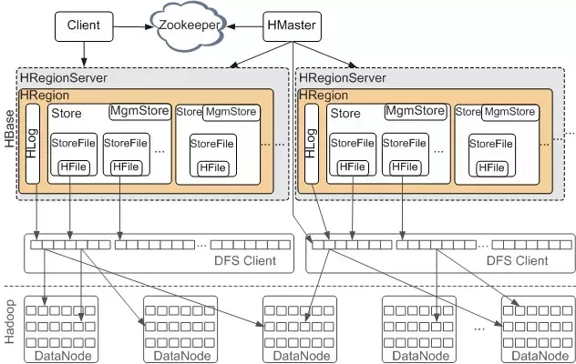

HBase原理与实践读书笔记
一、概述
google三论文
1、GFS：Google File System （数据分布式存储）
2、MapReduce：Simplefied Data Processing on Large Clusters 数据的分析计算
3、BigTale：A Distributed Storage System for Structured Data 高效读写
HBase是在HDFS之上的分布式KV数据库系统
HBase数据模型:
1 | {"rowkey11","技术类书籍","HBase原理与实践","put","t8"} => "书籍的内容...." |
HBase体系结构

1、zookeeper保证高可用
2、hdfs保证存储
3、HBase负责读写功能
- 写缓存 memstore (region下管理多个store 每个store有1个memstore和多个HFile)
- 读缓存 blockCache (直接管理block)
- 分布式 WAL(Hlog)
HBase系统特征
- 优点:
1、容量大
2、良好的扩展性 可以简单堆机器来实现扩容
3、稀疏性 不浪费空间
4、高性能，随机读取及小范围读取 性能强劲
5、数据多版本存储
6、支持多版本数据过期删除
7、Hadoop原生支持，可针对HBase的优化 - 缺点
1、不支持聚合运算
2、技术角度不支持二级索引
3、只支持单行事务
二、数据结构和算法
程序=算法+数据结构
列簇（store）是LSM树
1、类似B+树，LSM树对写入更加友好，因为他会将写入操作处理成一次顺序写，所以内存和磁盘上的数据都是有序的
2、磁盘部分，key排序规则: rowkey+columnFamily+column+timestamp+type
3、内存部分（跳跃表），
LSM内存部分:跳跃表，增删查 O(logN) 一旦超过阈值，将会flush到磁盘上
因为不断的写入，所以会分裂，用两个memstore来保证写性能稳定
LSM磁盘部分:布隆过滤器
1、写入的时候都是顺序写，为了照顾查询的需求，所以会合并（异步）
2、compact分为minor和major
布隆过滤器
解决了如何在磁盘上查看一个元素是否在集合里
1、把集合里所有的元素hash若干下，然后组合成一个01数组K
2、将需要查询的元素也hash若干下，得到一个01数组K1，如果K包含K1，则集合里可能包含该元素，反之必不包含该元素
HBase rowkey设计 一般都是布隆过滤器的设计
三种策略 NONE:关闭 ROW:按照rowkey生成布隆过滤器(默认)ROWCOL:(rowkey+columnFamily+column)
三、HBase依赖服务
zookeeper保证高可用
1、HBase master节点高可用
2、RegionServer宕机后，zookeeper会迁移Region，但是会因为Locality会导致一些性能问题
3、分布式行锁
HDFS
1、HBaseClient -> HBaseServer -> DFSClient -> HDFSClient -> HDFSService
2、文件读取
- locality 该文件存储在本地机器的字节数之和 / 该文件总字节数
- 短路读 对那些Block落在和DFSClient同一台机器上的数据，可以不走TCP协议进行读取，而是直接由DFSClient向本机的DataNode请求对应Block的文件描述符（File Descriptor），然后创建一个BlockReaderLocal，通过fd进行数据读取，这样就节省了走本地TCP协议栈的开销。
四、HBase客户端
对写很友好，因为对写做了大量优化
随机读取
1、读数据时，client会去请求HBase master（也是一个Region），找到hbase:meta表，把改表缓存到client端，然后从hbase:meta里查询应该去找哪个业务region
2、每次取数据时，类似于分块取的，而且这个策略是可以调整的
3、行锁CAS
扫描
1、过滤器Filter，一条条扫描，发现不满足条件就读下一行
2、setStartRow，setStopRow 可以首先定位第一个rowkey，和终止rowkey
3、有limit
4、SingleColumnPageFilter，可以过滤rowkey,列簇，列，值
5、少量写和批量写，bulk load写是直接写入HFile，然后把HFile写入Region的
五、RegionServer HBase最核心的模块
HLog
写入的时候，先写HLog，再写入memstore
1、故障恢复，主从复制
2、文件存储
3、生命周期
MemStore
写缓存
1、将随机写转换为顺序写，keyValue数据排序执行者，有合并功能（丢弃过期数据)还有读缓存功能
2、数据结构是两个跳跃表，支持异步落盘
3、GC问题 回收机制
HFile
落盘文件
1、逻辑结构
- Scanned Block 顺序扫描读取(业务数据)
- Non-scaned Block 元数据
- Load-on-Open 打开时加载到内存
- Trailer Hfile版本信息
2、物理结构
各种类型的block 都有对应着逻辑结构
- Trailer Block HFile版本信息，其他block的偏移量，一些统计量
- Data Block 业务数据存储的最小单元
- 布隆过滤器相关Block
- 索引相关Block 这个索引是在HFile里检索用的
- root index Block,NonRoot index Block
3、HFile V3版本
- 标签/权限
BlockCache
1、LRUBlockCache
- 缓存分层
- 淘汰算法
- 该算法导致大量碎片，缺点:某种条件下会Full GC
2、SlabCache
一般配合LRUBlockCache使用，这种DoubleBlockCache依然有产生大量碎片的问题
3、BucketCache
可以设置JVM内存 非JVM内存，文件，有14种大小，避免了内存碎片问题
一般和LRUBlockCache混合使用
1、内存组织形式
2、缓存写入，读取流程
3、工作模式
4、配置
六、HBase读写流程
写入流程
1、客户端处理阶段
- 写入本地缓冲区
- 根据rowkey找到本地或远程的meta表
- 找到RegionServer,发起RPC请求
2、Region写入阶段
- 行锁处理
- 更新所有写入的时间戳
- 构建WALEdit记录
- 将WALEdit写入WAL
- 写入WAL后，再将数据写入MemStore
- 释放锁
- Sync wal
3、MemStore Fluch阶段
- 触发时机
超过上限
Region中所有的MemStroe超过上限
RegionServer中所有HLog超过上限
定期刷新MemStore
手动执行flush - 执行流程
prepare阶段，新建一个跳跃表（快照）
flush阶段
commit阶段，将生成的临时文件移动到列簇目录下，然后异步写，清空快照 - HFile构建流程
构建各种block
4、Region写入流程
追加写入HLog
- *HLog持久化等级
- HLog写入模型—生产者，消费者
随机写入MemStore- 检查Chunk是否写满
- 在内存中重新创建KeyValue，在指定的offset位置
- 将KeyValue写入跳跃表
5、bulkLoad功能
批量导入数据使用这个，可以不经过regionServer
读取流程
比较复杂，因为涉及多个region，而且有的在内存，有的在磁盘
1、client->server
客户端缓存
2、scan体系
- 构建scanner iterator
RegionScaner->StroeScanner->(StoreFileScaner,MemStoreScaner) - 过滤条件
keyRange,timeRange,布隆过滤器 - 打开HFile后，先把HFile的索引树加到内存，然后定位block(可能再blockCache或HDFS上)
- 从block中查到keyValue
3、Coprocessor
类似触发器，可以自定义get后的执行逻辑
- Hbase默认由四种Observer
- 分为动态加载和静态加载
Compaction(HFile)
工作原理
分为minor Compaction和major Compaction
合并小文件，减少文件数量，稳定随机读延迟
提高本地化率
清楚无效数据，减少存储
基本流程
独立线程，根据文件大小挑选合适的线程池触发机制 (源头是flush)
1、memstore flush
2、后台定期检查
3、手动触发待合并Hfile集合选择策略
挑选合适的执行线程池
HFile文件合并执行
1、独处keyValue，并归
2、临时文件移动到stroe目录
3、campaction输入文件和输出文件封装为KV写入Hlog
4、将store下compaction输入文件删除Compaction相关注意事项
1、io放大，要设置吞吐量
2、如果不是本地合并，网络IO
跨网络读可以避免，跨网络写没有办法避免高级策略
1、控制参与Compaction的文件数
2、FIFO—-过期删除策略
3、Tier-Based Compation—-文件选取策略 热点数据
4、Level Compation 分层，只解决了读最近数据的需求，没有解决major compaction问题
5、stripe Compaction 可以看成小region
HBase负载均衡
Region迁移
1、Region状态：
(1)unassign:表示region从rs下线 (典型场景:长时间没有写入)
(2)assign:表示从region在rs上线
2、Region合并
3、Region分裂策略 （事务，原子）
(1)超过一定大小 有参数可以设
(2)加快小表的分裂 有参数可以设
(3)减慢小表的分裂 各有优势
HBase负载均衡策略
1、SimpleLoadBalancer
每个RegionServer的Region数量基本相同，但是没有考虑到热点数据问题
2、StochasticLoadBalancer
加权的复合值 包含Region个数，负载，读写请求数，Stroefile大小，memStore大小，数据本地率，移动代价
宕机恢复原理
复制
跨集群的复制
备份与恢复
snapshot工具
Hbase运维
Regionserver监控
Region数量，HFile数量，HFile大小，HLog数量
请求数量(读/写) RPC连接数，活跃请求队列Handler数量，flush队列长度，Conpaction队列长度
GC时长，新生代/老年代GC时长
HBase表级监控
store file 数量 大小
集群的基准性能测试
yahoo公司的YCSB工具，针对NoSQL的基准测试工具
业务隔离
(1)队列级别隔离，优先级
(2)CPU/内存资源隔离，给RegionServer分组
(3)IO隔离，这个还做不到，只能靠部署新集群
HBCK，一致性检查(对元数据进行检查，表的一致性，完整性检查)
核心参数配置
(1)Region分裂大小
(2)BlockCache的lru占用JVM的大小，策略，堆外内存大小
(3)memstore flush阈值，单个memstore大小，region下memstroe的总量大小，jvm占用大小 regionserver上的memstore大小，时间间隔
(4)Compaction阈值，store文件数，最多参与minor compaction文件数，评估compaction大小的依据如果太大会分配线程，large和small Compaction线程数，store file导致更新阻塞的数量，major触发周期
(5)HLog，导致Region flush触发的大小，fluch写入线程数
(6)请求队列相关参数，服务端用于请求队列线程数（包含排队时间和服务时间），队列个数，读写占用队列的百分比，get/scan隔离参数
(7)其他,qps，开启snapshot，zk的检测时间，开启zk的multi-update，设置权限，….
HBase表设计
(1)同业务的在一个命名空间下
(2)根据业务设置不同的列簇
最大的保留版本数
是否开启blockcache
bloomfilter策略
ttl，数据失效时间，是在compaction环节
compression，压缩算法，推荐SNAPPY
数据编码算法，也是耗费CPU，慎重选择
blocksize，文件曾写入，读取最小粒度，默认64K，get的话，可以设置小，scan的话，可以设置大
dfs的副本数
in_memory:数据量不大的话，get/scan频繁，可以设置这个
(3)表属性
预分区，保持数据分布均匀
uniformsplit适合随机数
hexstringsplit适合16进制
max_file 最大文件大小，默认10G，region中所有文件大于这个就分裂
readonly 只读表
compaction开启
memstroe大小
durablity，WAL持久化登记，根据写入吞吐量，数据重要性，控制策略
salted table
要对rowkey做散列然后%n，如果有5台机器，rowkey头加个0，1，2，3，4就可以了
这个算法全局统一即可
但是对scan不是太友好，要做多路归并
系统调优
GC
cms g1 都需要做ycsb测试
搭建测试环境,用gc_log_visualizer工具看
操作系统调优
1、并不是关掉swap，只是尽可能少用 vm.swappiness设置0==不积极使用swap
zone_reclaim_mode=0
2、操作系统一页是4K，数据库是使用hugePage（thp是一种大页理论），2MB ，但是线上需要关闭，因为有动态分配的延迟
3、hdfs
（1）短路读要开（可以绕过DN直接读数据）
（2）hedged read，可能会发出向多个副本的请求，谁先返回用谁
（3）本地率—靠major compaction来保证
读取性能优化
1、服务端优化
(1)读请求是否均衡 rowkey散列设计
(2)BlockCache设置是否合理
(3)HFile小文件是否过多
(4)Compaction是否影响太大
(5)数据本地率是不是很低
2、客户端优化
(1)scan缓存是否设置合理
(2)get是否使用批量请求
(3)是否可以显示指定列簇或列
(4)离线批量读是否禁止缓存
3、列簇设计
布隆过滤器是否设置
写入性能优化
1、服务端优化
(1)Region太少
(2)写请求是否均衡
(3)utilize Flash storage for WAL
将WAL写到SSD上
HBase客户端优化
1、bulkload写入（MapReduce）
2、写WAL的等级
3、put同步批量提交
4、put异步批量提交，可能会有丢失
5、keyvalue大小
HBase运维案例分析
HBase2.x核心技术
- 保证核心步骤原子性,分布式场景下多状态不一致问题
- in memory compaction功能，缓解写放大，缓解写路径GC压力
- 存储MOB数据，对大value支持好
- 读写全链路offheap话 ，就是非jvm内存
- 异步化设计 提升吞吐量
高级话题
1、二级索引
(1)局部二级索引 在一个表里
(2)全局二级索引 在两个表里
2、单行事务和跨行事务
跨行事务:pecolator 协议
3、HBase开发与测试流程
推荐blog:https://www.cnblogs.com/duanxz/p/3154345.html
官方中文文档:http://abloz.com/hbase/book.html
写多读少的场景适合用:LevelDB